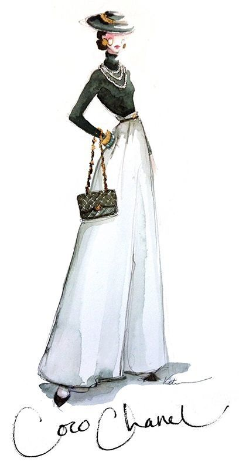
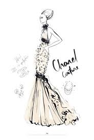

Ce site retrace la vie personnelle et professionelle d'une des plus grandes créatricede mode, Gabrielle Bonheur Chanel, plus connue sous le nom de Coco Chanel, à travers 6 vidéos. Ce site a pour unique source la page officiel de Chanel sur youtube.
Gabrielle
Voici une vidéo retracant la vie de Coco Chanel depuis sa naissance, jusqu'à la mort de son mari, Boy Capel. Cette vidéo nous montre comment s'est construit le génie Chanel :
Le génie de Coco Chanel
Voici plusieurs vidéos qui présentent les pièces phares de la créatrice. Comme par exemple, l'emblématique veste chanel ou sa collection de diamant:
Cette vidéo présente l'unique, l'indémodable veste Chanel depuis sa création révolutionnaire par Coco, jusqu'à sa reprise par Karl Lagerfeld.
cette vidéo présente les fondements de Chanel, ce qui en fait plus qu'une simple marque de luxe, mais un empire, une légende. Comme on vous l'explique dans la vidéo, "Chanel , c'est un vocabulaire, des règles, une discipline, une grammaire".
Cette vidéo présente la collection de diamants que Coco Chanel avait présenté en 1983.
Voici quelques croquis des créations de Coco Chanel en personne:


Vous pourrez trouver la page officielle de Chanel mais également leur site, où l'on peut retrouver les vidéos "inside Chanel" mais aussi plein d'autre informations ici